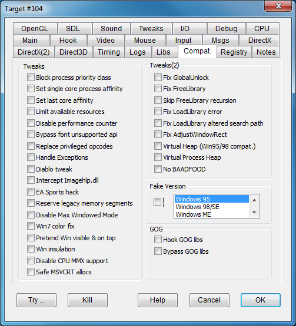

|
Block process priority class |
BLOCKPRIORITYCLASS |
Blocks a process's attempts to change its own priority class. Old fullscreen games may use this trick to get 100% CPU power dedicated to them, but on modern OSes and windowed environments this could be a bad idea, interfering with other operations and overheating the processor for no reason. |
|
Set single core process affinity |
SINGLEPROCAFFINITY |
Some games are not properly synchronized to run on physically separate multiple core CPUs, or simply don't properly handle powerful CPUs. This option sets the program's core affinity so that the program is run by a single core (the first one). |
|
Set last core affinity |
USELASTCORE |
Same as SINGLEPROCAFFINITY, but picks the last CPU core. |
|
Limit available resources |
LIMITRESOURCES |
Causes the query for available resources (RAM, hard disk space, and so on) to return a limited value: some old games can't handle a very big integer number and see it as a negative value, refusing to start. Note: The Hook tab option "Inject suspended process" may need to be enabled first for this option to work. Usually games that need this flag crash immediately at the start complaining about the lack of memory. However there are exceptions to this rule. For example Dungeon Keeper crashes randomly during game play if this flag is not enabled. |
|
Disable performance counter |
NOPERFCOUNTER |
Since performance metrics hardware is not mandatory on a PC, this flag disables the GetPerfCounter() performance metrics API, simulating an unsupported condition. Usually, in this condition the software should rely on other performance measurement metrics that are more conveniently manipulated by DxWnd timing hooks. It should be set when, despite the time acceleration feature, the program doesn't seem to behave according to the imposed speed ratio. |
|
Bypass font unsupported api |
FONTBYPASS |
Some games may attempt to manage old font styles that were present by default on legacy platforms and are no longer supported. This flag simulates a success operation to let the program continue. Of course, the font will be wrong, but Windows will approximate the choice with the most similar available font. |
|
Replace privileged opcodes |
REPLACEPRIVOPS |
Real multitasking OSes (from Windows NT onward) forbid applications from using privileged instructions that directly manipulate the hardware, like the IN opcode. Running a program with such opcodes would result in a program exception on modern systems. This option scans the program code segment at startup and replaces all detected privileged operations with NOP (no operation) instructions. Since these opcodes are often dedicated to interactions with sound hardware, the program will likely work with the possible side effect of some audio issues. Use this flag for games like Ubik. |
|
Handle exceptions |
HANDLEEXCEPTIONS |
Setting this flag causes DxWnd to set its own exception handler that tries (often successfully) to fix several common exceptions, such as the divide by zero exception in old games that were trying to calculate the CPU speed. This is a good flag to try to fix random crashes. |
|
Diablo tweak |
DIABLOTWEAK |
A flag that seems to improve Blizzard's "Diablo" compatibility. It should not be used for other games and will cease to be supported as soon as a more general tweak is discovered. |
|
Intercept Imagehlp.dll |
NOIMAGEHLP |
Intercept imagehlp.dll unsupported calls, returning a clean error condition so that the program doesn't crash. One notable game that needs this flag is The Fifth Element. |
|
EA Sports hack |
EASPORTSHACK |
Intercept and neutralize some of the internal hooks usually set by "EA Sports" games, and possibly other titles as well. |
|
Reserve legacy memory segments |
LEGACYALLOC |
Old 16-bit programs for Windows 95 and 98 relied on the availability of memory from address 0x4000000 to 0x8FFFFFF, even though they never explicitly allocated it. Recent OSes don't guarantee this memory availability. This flag, combined with "Inject suspended process", reserves memory in this range when the program starts up, before that memory can be used for other purposes. |
|
Disable Max Windowed Mode |
DISABLEMAXWINMODE |
Invoke DirectDraw SetAppCompatData(12,0) to set the DisableMaxWindowedMode. |
|
Win7 color fix |
COLORFIX |
As described in a DirectDraw hack, this flag fixes a color problem that Windows 7 has with 8BPP palettized modes. It only has an effect when the screen is actually set to an 8BPP color depth, which is now very rare. |
|
Pretend Win visible on top |
PRETENDVISIBLE |
When set, it forces the detection of the main window as always visible (IsWindowVisible will always return TRUE) and on top of the z-order (GetTopWindow always returning the main window handle) as one would expect from a fullscreen program window. |
|
Win insulation |
WININSULATION |
Avoid enumerating windows so that the program can't interfere with them. Fixes "Tribal Rage" damages to desktop. |
|
Disable CPU MMX support |
DISABLEMMX |
Fixes "The New Adventures of the Time Machine". |
|
Safe MSVCRT allocs |
SAFEALLOCS |
The msvcrt.dll library contains the implementation of C/C++ allocation routines malloc, free, realloc. Many bugs may come from errors in using the addresses returned by and fed to these calls. The flag tries to prevent some problems by wrapping the allocated areas with a small preamble that identify the correct usage of these functions. In particular, it avoids free operations on bad addresses (either because already freed or just wrong) skipping a potential cause of game crash. |
|
Fix GlobalUnlock |
FIXGLOBALUNLOCK |
Fixes a reported problem of the 16-bit GlobalUnock() API's 32-bit port. In some cases, it never returns the expected value, causing game crashes or endless loops. |
|
Fix FreeLibrary |
FIXFREELIBRARY |
Fix FreeLibrary, simulating a return code of 0 (error) when attempting to free an unallocated module as Windows 95 and 98 would. Use this flag to fix the endless loop problem in "Heavy Gear" version 1.2. |
|
Skip FreeLibrary recursion |
SKIPFREELIBRARY |
Corrects an issue with the FreeLibrary invocation that ends up in a recursive call causing a stack overflow. (Fixes the "Disciples Sacred Lands" crash at startup.) |
|
Fix LoadLibrary error |
LOADLIBRARYERR |
Return ERROR_DLL_NOT_FOUND instead of ERROR_MOD_NOT_FOUND error code. Fixes "Nightmare Creatures". |
|
Fix LoadLibrary altered search path |
FIXALTEREDPATH |
Corrects an issue with the standard and alternate search strategy in LoadLibraryEx by adding the current working directory to the search path, so that the files can be linked while staying in the original place. (Needed for the game "Anachronox".) |
|
Fix AdjustWindowRect |
FIXADJUSTWINDOWRECT |
Selectively turn the AdjustWindowRect coordinate patching. The flag must be checked for "Man TT Super Bike" and unckecked for "Imperialism II". |
|
Virtual Heap (Win95/98 compat.) |
VIRTUALHEAP |
Remaps memory requests from heap to malloc requests for any additional heap but the default process heap. Needed for some "Wing Commander" games to work. |
|
Virtual Process Heap |
VIRTUALPROCHEAP |
Forces the malloc replacement also for the process heap despite the fact that it is not possible to intercept its creation. Requires the VIRTUALHEAP flag to be set. |
|
NO BAADFOOD |
NOBAADFOOD |
Avoid (virtual) heap initialization to 0xBAADFOOD value, setting to 0x0 instead. Needed to run "Independence Day". |
|
Fake Version |
FAKEVERSION |
Causes the program to detect the chosen Windows release. Notice: this is not the same thing as the compatibility setting of the Windows properties panel, which also adjusts the system's behavior to emulate the chosen platform. |
|
Hook GOG libs |
HOOKGOGLIBS |
Games distributed by GOG (gog.com) sometimes apply compatibility patches by changing the name and compatibility behavior of some system DLLs and routing system calls here. This flag causes DxWnd to hook these custom libraries instead of the system equivalent. Only use this flag on certain GOG games. |
|
Bypass GOG libs |
BYPASSGOGLIBS |
The purpose of this flag is similar to that of HOOKGOGLIBS. It is sometimes a better solution to avoid rerouting the system calls to custom DLLs and instead map them to system DLLs. This flag breaks GOG's system call rerouting. Only use this flag on certain GOG games. |